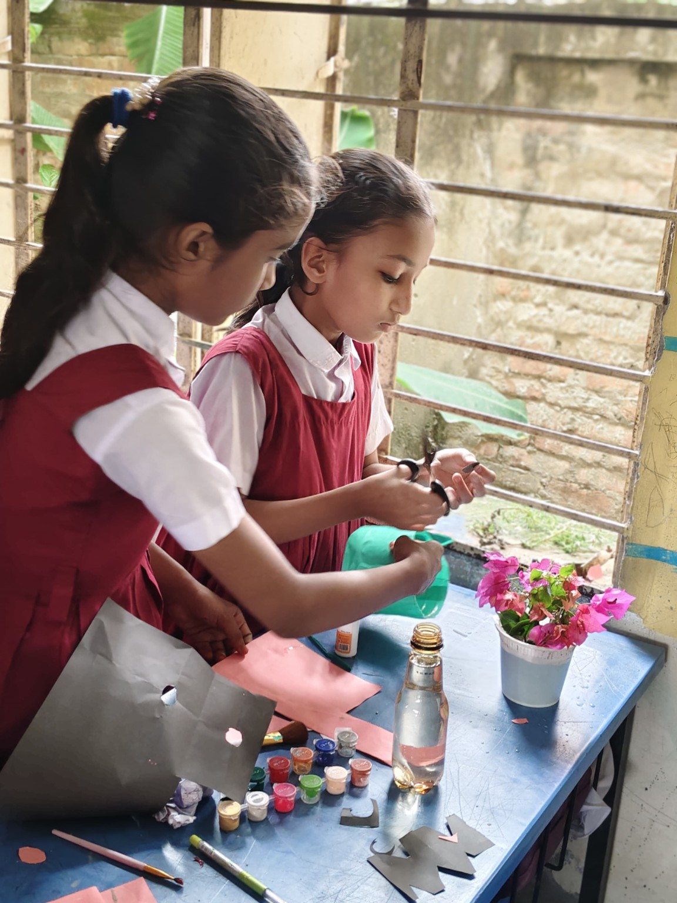
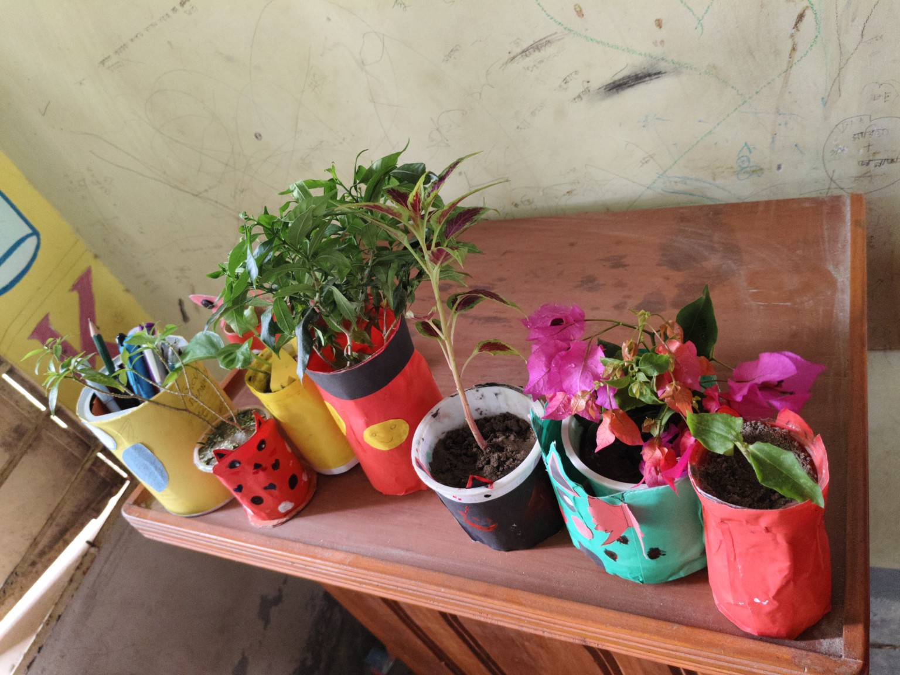
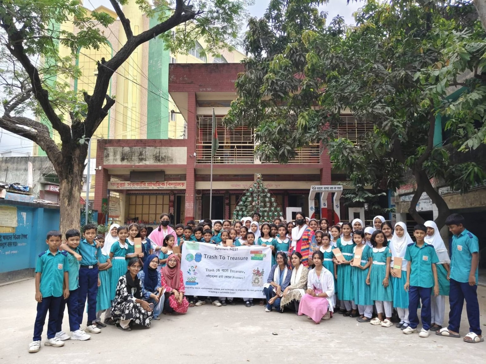
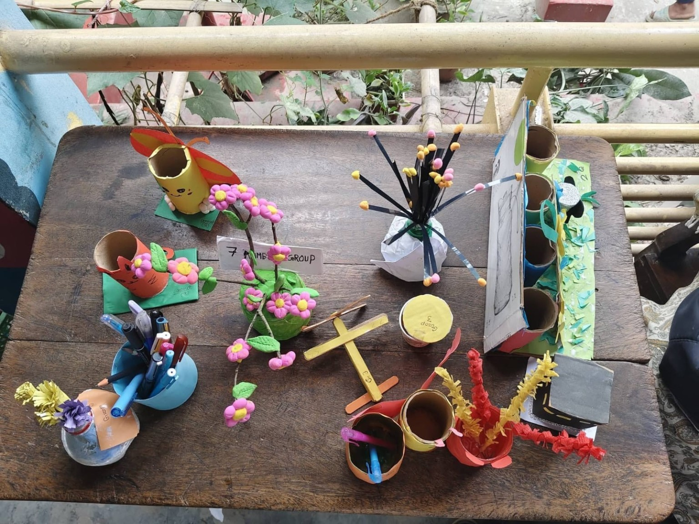
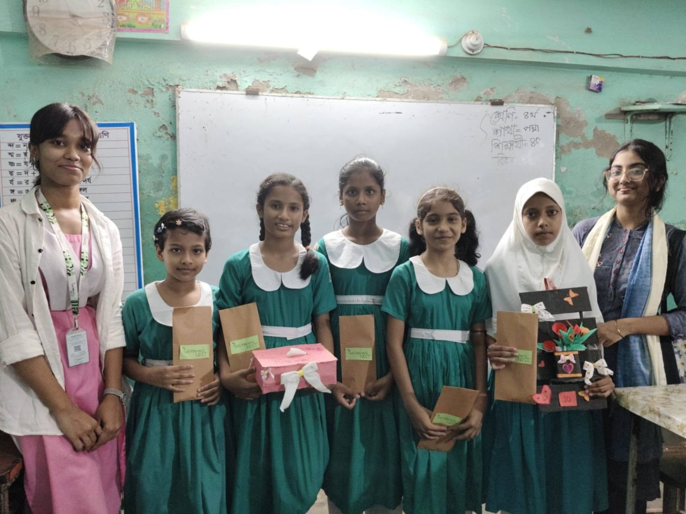
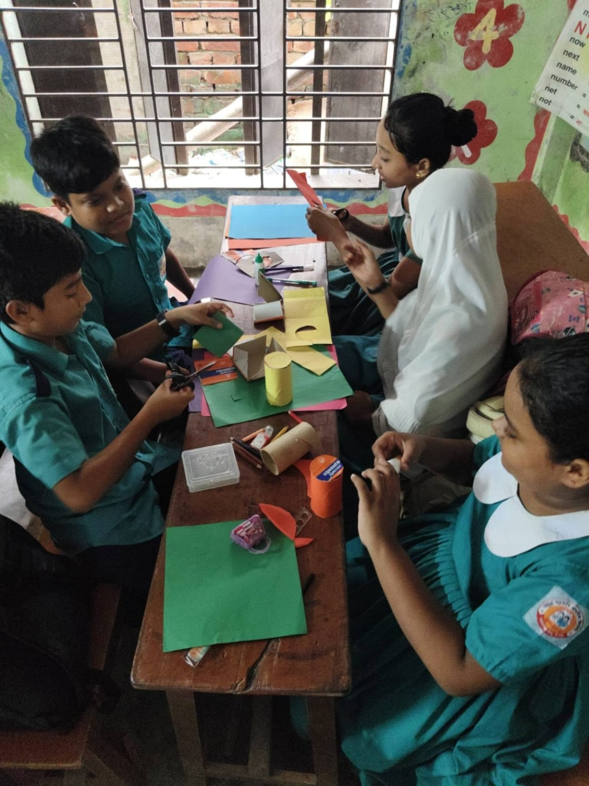
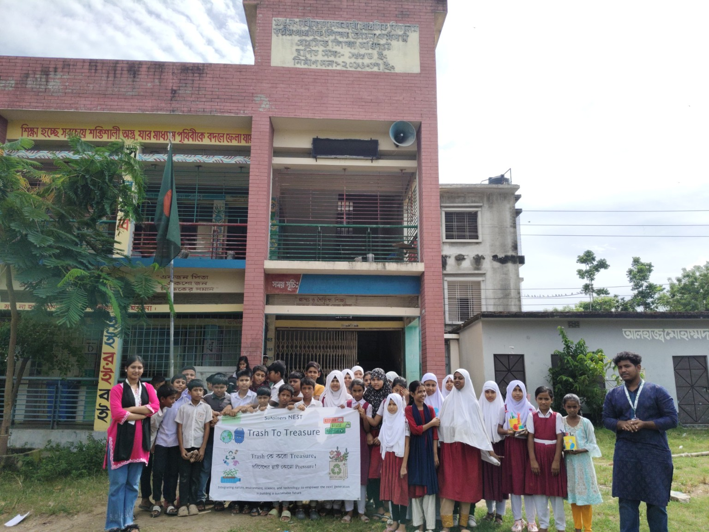
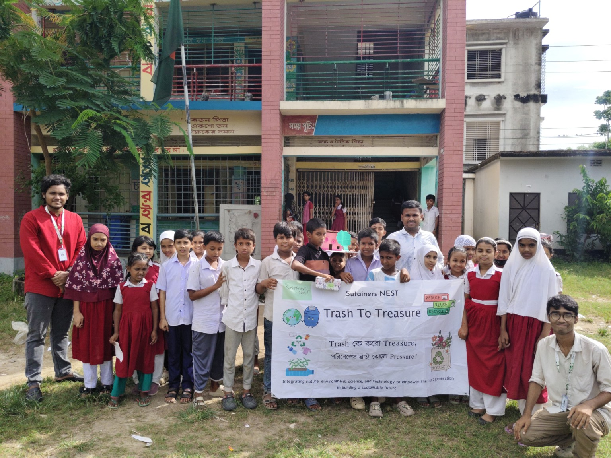
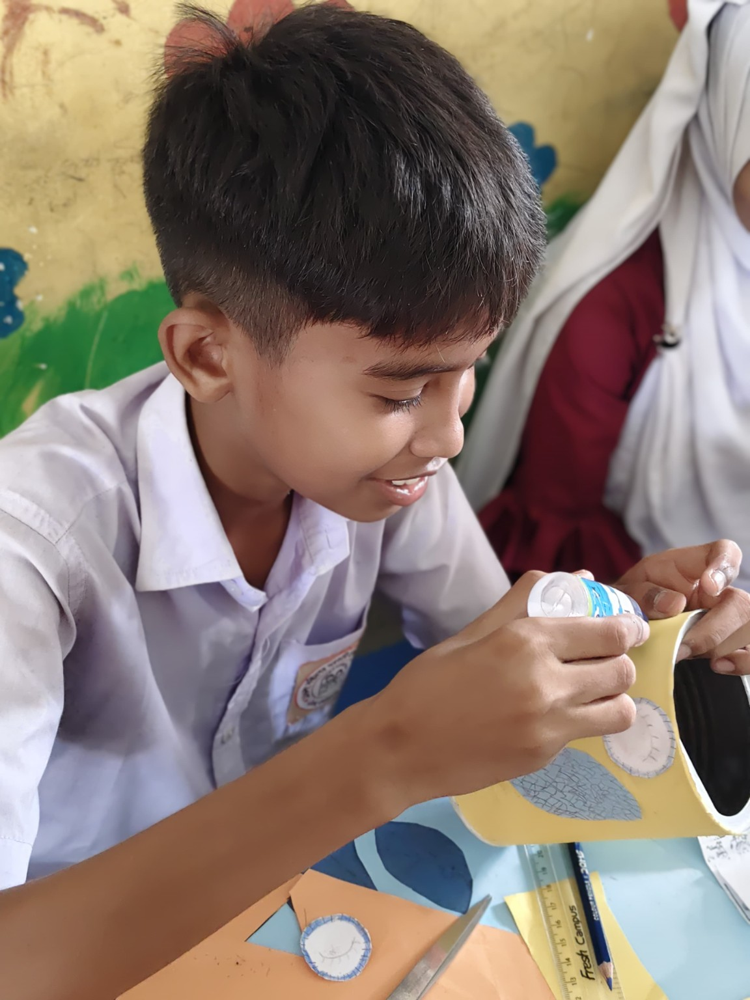

Building Eco-Habits
Young innovators learn waste segregation, the 3Rs and how everyday choices affect the environment.
A hands-on environmental initiative teaching young innovators waste management and recycling through creative upcycling.
Trash To Treasure helps young innovators understand that household waste does not always need to end up in landfill. Through environmental learning and creative reuse, discarded materials can become useful and artistic items.
“Trash কে করো Treasure, পরিবেশের নাই কোনো Pressure!”



A simple two-step journey moves young innovators from understanding responsible waste habits to applying those ideas through creative work.
Young innovators learn waste segregation, the 3Rs and how everyday choices affect the environment.
Young innovators use bottles, tissue rolls, cans, cardboard and other scrap to create useful or decorative items.
Real institute activities show how the project moves from environmental learning into practical creative action.




27 & 29 July 2026
A two-part institute activity where young innovators connected waste awareness, reuse and hands-on creative upcycling.



20 & 22 September 2026
A two-part activity where young innovators combined responsible waste-management learning with practical creative reuse.
Volunteer, collaborate as an institute or organization, or support a future activity.